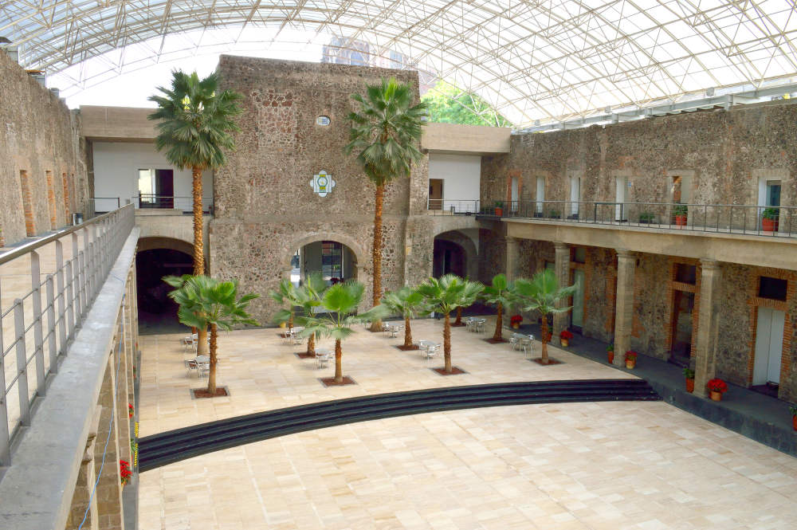

Non-associative algebra and Lie theory, Mexico City, February 27 - March 3, 2017
The conference will take place in the Cultural Centre of Contemporary Mexico (Centro Cultural del México Contemporáneo, CCMC), next to the historic Church of Santo Domingo, see the map below. The photo below displays the patio of the CCMC building.
